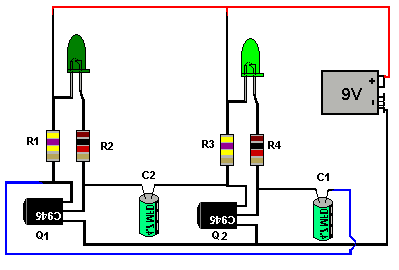

Este es uno de los receptores más comunes, una bombilla o foco. Su función es iluminar
Este es el genrador, le da energía a el/los receptores
Este es el suiche, funciona para dejar o no dejar fluir la energía del generador
Esta es la resistencia, actúan como obstáculo cuando pasa la corriente eléctrica
Este es un circuito cerrado bastante completo y en función
Los algoritmos de estructura secuencial se determinan por los pasos, los cuales deben estar enumerados y estar
indicado con el nombre de “inicio” y finalizar con la palabra “fin”. Posteriormente,
se debe ordenar la actividad a realizar y por último, se debe chequear que el proceso siga una secuencia sucesiva
Las estructuras repetitivas se utilizan para realizar un determinado tipo de instrucciones en un número finito
de veces. Se caracterizan por tener un punto inicial de partida, una condición la cual se encarga de ejecutar
un número determinado de acciones hasta que esta condición no sea válida (no se cumpla).